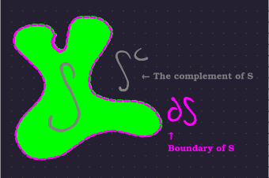
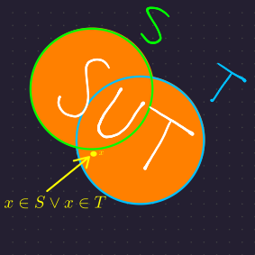
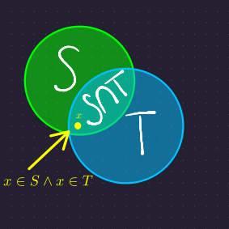
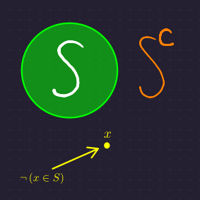
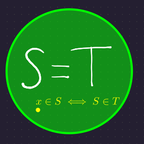
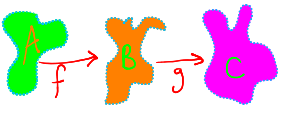
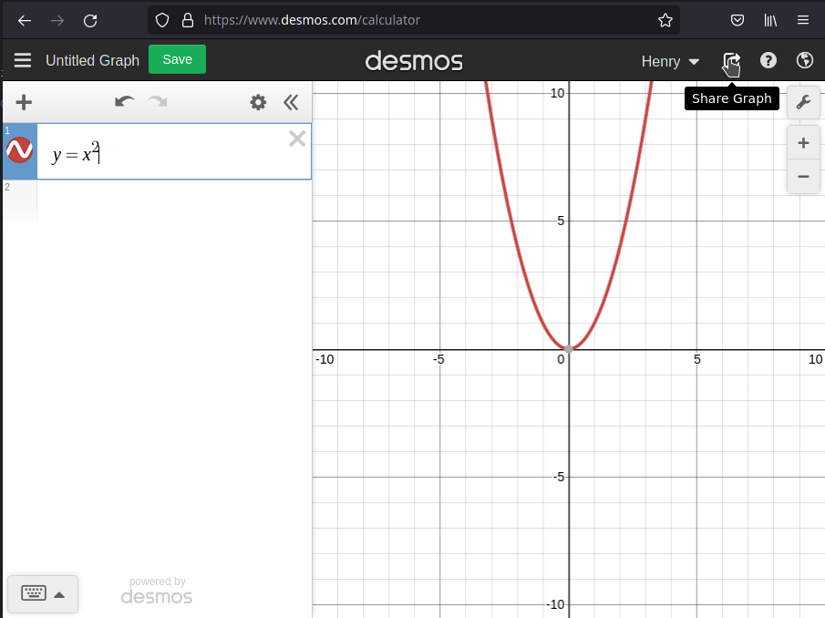

About
These are the lecture notes for MATH 33X 2021-2022, taught by Professor Stefan Steinerberger. They use both the lecture and textbook as a reference. If there is something wrong with the notes, please contact Henry H or Nelson S in the MATH 33X Discord. 😀
If you would like to contribute to these notes, contact Henry H with your GitHub username to be able to clone and push to this repository.
These lecture notes use mdbook. Its documentation can be found here.
When new commits are added to the GitHub repository for this work, the version of this document on GitHub pages. should automatically update.
Boolean Logic
Boolean Logic
We’ll be using \(\T\), \(\F\), and the operators \(\wedge, \vee\), and \(\neg\).
Summary of Notation
|
\(\T, \F\) |
|
|---|---|
|
\(\wedge\) |
|
|
\(\vee\) |
|
|
\(\neg\) |
|
|
\(\iff\) |
Bi-implication/”if and only if” |
\(\vee\) and \(\wedge\) are both associative and commutative. Generally, we let \(\wedge\) have higher precedence than \(\vee\) and \(\neg\) have higher precedence than \(\wedge\). In this way, \[ a \vee b \wedge \neg c \vee d = a \vee (b \wedge (\neg c)) \vee d \]
Propositions
Also called sentences, propositions are statements that are either true or false. We’ll be representing them with capital letters. For example, A.
DeMorgan’s Laws
\[ \neg \left( A \vee B \right) = \neg A \wedge \neg B \] and \[ \neg \left( A \wedge B \right) = \neg A \vee \neg B \]
Precedence
Conventionally, \(\wedge\) has higher precedence than \(\vee\) and \(\neg\) has higher precedence than \(\wedge\). This means that \(A \vee \neg B \wedge C = A \vee ((\neg B) \wedge C)\), because operators with higher precedence are evaluated/applied first.
Applying DeMorgan’s Laws to \(\exists\) and \(\forall\)
First, it’s useful to define \(\exists x. P(x) := \vee_{x \in D} P(x) \) and \(\forall x. P(x) := \wedge_{x \in D} P(x)\), where \(D\) is some domain we’re interested in.
Using these definitions, we get:
\[ \begin{aligned} \neg \left(\exists x. x \neq 0\right) \iff \forall x. \left(x = 0\right) \\ \neg \left(\forall x. x \neq 0\right) \iff \exists x. \left(x = 0\right) \end{aligned} \]
TODO
References
- Lecture notes published for quiz section
- Lecture
The Cauchy-Schwarz Inequality
\[ \left|\left<x, y\right>\right| \leq ||x|| \cdot ||y|| \]
Some say it is the most important theorem in mathematics.
Oh, and about \(\iprod{x, y}\) ...
Throughout these notes, we will use the notation \(\iprod{x, y}\) to refer to the inner product or dot product (or even sometimes the scalar product) of two vectors \(x, y \in\R^n\). In other contexts, the notation \(x \cdot y\) is common, but the former is the notation that will be used. And if you’re used to the other way, too bad for you.
The inner product \(\iprod{x, y}\) with components \(x_i\) and \(y_i\) for \(1 \le i \le n\) is given by
\[
\sum_{i = 1}^n x_iy_i
\]
The norm or magnitude of a vector \(x\), which can traditionally be understood as its length, is written as \(\norm{x}\), and can be defined as:
\[ \norm{x} = \sqrt{\iprod{x, x}} \]
Note that as \(\iprod{x, x} = \sum_{i = 1}^n x_i^2\), the square root is valid, and therefore \(\norm{x}\) is always non-negative.
Simple Inner Product Identities (other than Cauchy-Schwarz)
These can be proved by a simple application of the definition of the inner product! In these identities, \(x, y \in\R^n\) and \(n\) is a real number. You might receive a consolation prize if you struggle with proving the first one.
- \(\iprod{x, y} = \iprod{y, x}\)
- \(\iprod{x + y, z} = \iprod{x, z} + \iprod{y, z}\)
- \(\iprod{nx, y} = n\iprod{x, y}\)
The Cauchy-Schwarz Inequality Derivation
Getting the quadratic
Let \(x, y \in \mathbb{R}^n\) and \(t \in \mathbb{R}\). This proof uses the fact that \(\iprod{x, x} = ||x||^2 \geq 0\), as well as that \(\iprod{x, y} = \iprod{y, x}\) and that \(\iprod{x + y, z} = \iprod{x, z} + \iprod{y, z}\). \[ \begin{aligned} 0 &\leq \iprod{x - ty, x - ty} \\ &= \iprod{x, x - ty} + \iprod{ -ty, x - ty } \\ &= \iprod{ x - ty, x } - t\iprod{ y, x - ty } \\ &= \iprod{ x - ty, x } - t\iprod{ x - ty, y} \\ &= \iprod{x, x} - t\iprod{ y, x } - t\iprod{ x - ty, y }\\ &= \iprod{x, x} - t\iprod{ x, y } - t\iprod{ x, y } - t\iprod{-ty, y}\\ &= \iprod{x, x} - t\iprod{ x, y } - t\iprod{x, y} + t^2\iprod{y, y}\\ &= \iprod{x, x} - 2t\iprod{ x, y } + t^2\iprod{y, y}\\ &= t^2\iprod{y, y} - 2t\iprod{ x, y } + \iprod{x, x} \end{aligned} \]
Let \(f(t) = t^2\iprod{y, y} - 2t\iprod{x, y} + \iprod{x, x}\). Notice that \(f\) is a quadratic function of \(t\)!
Graphing it
Graph of
\(f(t)\)
Notice that when we graph \(f(t)\), we get a quadratic that is always above the x-axis: It must have a minimum and that minimum must be where its first derivative is zero.
Notice that \(t\) is the only variable we’re changing here, so taking its derivative is easy! Let’s find its minimum! \[ \begin{aligned} f’(t) &= \frac{\partial}{\partial t} \left(t^2\iprod{y, y}\right) - \frac{\partial}{\partial t} \left( 2t\iprod{x, y}\right) + \frac{\partial}{\partial t} (x)\\ &= 2t\iprod{y, y} - 2\iprod{x, y} + 0\\ \implies 0 &= 2t_{\text{min}} \iprod{y, y} - 2\iprod{x, y}\\ \iff 2\iprod{x, y} &= 2t_{\text{min}} \iprod{y, y}\\ \iff 2t_{\text{min}} \iprod{y, y} &= 2\iprod{x, y} \end{aligned} \]
Keeping in mind that we constrain \(x \neq 0 \neq y\), \[ \begin{aligned} t_{\text{min}} &= \frac{\iprod{x, y}}{\iprod{y, y}} \end{aligned} \]
Using the minimum
That \(f\left(t_{\text{min}}\right) \geq 0\) implies that all other \(f(t) \geq 0\), and so is a very strong statement. Let’s see what we get if we substitute \(t_{\text{min}}\) into our inequality!
(Again, note that we have \(\frac{\iprod{y, y}}{\iprod{y, y}} = 1\) because \(y\neq 0\), so \(\iprod{y, y} = ||y||^2 \neq 0\))
\[ \def\tmin{t_{\text{min}}} \begin{aligned} 0 &\leq \tmin^2\iprod{y, y} - 2\tmin\iprod{ x, y } + \iprod{x, x} \\ &= \left(\frac{\iprod{x, y}}{\iprod{y, y}}\right)^2 \iprod{y, y} - 2 \left(\frac{\iprod{x, y}}{\iprod{y, y}}\right)\iprod{x, y} + \iprod{x, x} \\ &= \frac{\left(\iprod{x, y}\right)^2 \iprod{y, y}}{\left(\iprod{y, y}\right)^2} - 2 \frac{\left(\iprod{x, y}\right)^2}{\iprod{y, y}} + \iprod{x, x} \\ &= \frac{\iprod{x, y}^2}{\iprod{y, y}} - 2 \frac{\iprod{x, y}^2}{\iprod{y, y}} + \iprod{x, x}\\ \iff 0 &\leq \frac{\iprod{x, y}^2}{\iprod{y, y}} - 2 \frac{\iprod{x, y}^2}{\iprod{y, y}} + \iprod{x, x}\\ \iff 0 &\leq -\frac{\iprod{x, y}^2}{\iprod{y, y}} + \iprod{x, x}\\ \iff \frac{\iprod{x, y}^2}{\iprod{y, y}} &\leq \iprod{x, x}\\ \end{aligned} \] Note that \(0 \leq \iprod{x, y}^2\) because \(x, y \in \mathbb{R}^n\). As such, \[ \begin{aligned} 0 \leq \iprod{x, y}^2 &\leq \iprod{x, x}\iprod{y, y}\\ \implies 0 \leq \sqrt{\iprod{x, y}^2} &\leq \sqrt{\iprod{x, x}\iprod{y, y}}\\ \implies 0 \leq \left|\iprod{x, y}\right| &\leq \sqrt{\iprod{x, x}}\sqrt{\iprod{y, y}}\\ \implies 0 \leq \left|\iprod{x, y}\right| &\leq \sqrt{||x||^2}\sqrt{||y||^2}\\ \implies 0 \leq \left|\iprod{x, y}\right| &\leq ||x|| ||y|| \end{aligned} \]
We now have the Cauchy-Schwarz Inequality! 🙂
Using the Cauchy-Schwarz Inequality
The Cauchy-Schwarz inequality can be used to show, among other things, that the correlation between two vectors is at most 1, and the triangle inequality (that the two shorter sides of a triangle \(||a||\) and \(||b||\) have a larger combined length than the longest side of the triangle).
Proving the Triangle Inequality
Let’s say that \(x, y \in \R^n\). We can then construct the triangle with sides \(x, y\) and \(x + y\).
Recall that \(\norm{x + y}^2 = \iprod{x, y}\).
We want to show that the longest side is shorter than the two shorter sides’ lengths added together. In other words, we want to show \(\norm{x + y} \leq \norm{x} + \norm{y}\).
Let’s start by squaring both sides. \[ \norm{x + y}^2 \leq \left(\norm{x} + \norm{y}\right)^2 \]
Note that we don’t have to consider the negative case because we know \(\norm{x + y} \geq 0\), \(\norm{x} \geq 0\), and \(\norm{y} \geq 0\).
Because we can reverse this operation and get \(\norm{x + y} \leq \norm{x} + \norm{y}\), if we can prove \(\norm{x + y}^2 \leq \left(\norm{x} + \norm{y}\right)^2\), then we have proven the triangle inequality: \[ \begin{aligned} \norm{x + y}^2 &\leq \left(\norm{x} + \norm{y}\right)^2\\ \iff \iprod{x, y} &\leq \left(\norm{x} + \norm{y} \right)^2 \\ \iff \iprod{x, y} &\leq \norm{x} \cdot \norm{x} + 2 \cdot \norm{x} \cdot \norm{y} + \norm{y} \cdot \norm{y} \end{aligned} \]
From the Cauchy-Schwarz inequality, we know \(\iprod{x, y} \leq \norm{x}\norm{y}\). As such, \[ \begin{aligned} \iprod{x, y} \leq \norm{x}\cdot \norm{y} &\leq 2\cdot \norm{x}\cdot \norm{y}\\ \implies \iprod{x, y} &\leq 2\cdot \norm{x}\cdot \norm{y}\\ \implies \iprod{x, y} &\leq \norm{x} \cdot \norm{x} + 2 \cdot \norm{x} \cdot \norm{y} + \norm{y} \cdot \norm{y}\\ &= \left(\norm{x} + \norm{y}\right)^2 && \texttt{...as was shown above} \end{aligned} \]
As such, we have \(\iprod{x, y} \leq \left(\norm{x} + \norm{y}\right)^2\). From this, square-rooting both sides gives us the triangle inequality.☺
Correlation
If we have two vectors, \(x, y \in \R^n\), then we define the correlation to be:
\[ c = \frac{\iprod{x’, y’}}{\norm{x’}\norm{y’}} \]
where \(x’ = (x_1 - \bar{x}, x_2 - \bar{x}, ..., x_n - \bar{x})\) and \(y’ = (y_1 - \bar{y}, y_2 - \bar{y}, ..., y_n - \bar{y})\), and \(\bar{x}\) and \(\bar{y}\) are the means of the values of \(x\) and \(y\) respectively. (Essentially, using \(x’\) and \(y’\) ensures that the mean of values of both vectors is zero.)
We can bound correlation using the Cauchy-Schwarz Inequality: \[ \begin{aligned} c &= \frac{\iprod{x, y}}{\norm{x}\norm{y}}\\ \implies c \cdot \norm{x}\cdot \norm{y} &= \iprod{x, y} && \texttt{... by Algebra}\\ \implies \abs{c \cdot \norm{x}\cdot \norm{y}} &= \abs{\iprod{x, y}} \\ \implies \Big|c \cdot \norm{x}\cdot\norm{y}\Big| &\leq \norm{x} \cdot \norm{y} && \texttt{... by the Cauchy-Schwarz Inequality}\\ \implies \norm{x}\cdot \norm{y}\cdot \abs{c} &\leq \norm{x} \cdot \norm{y} && \texttt{... because $\norm{x} \geq 0$ and $\norm{y}\geq 0$}\\ \implies \abs{c} &\leq \frac{\norm{x} \cdot \norm{y}}{\norm{x} \cdot \norm{y}}\\ \implies \abs{c} &\leq 1 && \texttt{... assuming $x \neq 0$, $y \neq 0$} \end{aligned} \]
As such, \(\abs{c} \leq 1\), and so, \(-1 \leq c \leq 1\).☺
Sidenote
For those familiar with the identity \(\iprod{x, y} = \cos\theta\norm{x}\norm{y}\), note that correlation is just the cosine of the angle between the vectors. If correlation is very close to \(1\), then \(\cos\theta\) is very close to \(1\) and hence \(\theta\) is close to \(0\), so the values of the two vectors increase and decrease together (the essence of correlation). Similarly, if correlation is close to \(0\), then \(\theta\) is roughly \(\frac{\pi}{2}\), and the values do whatever they want (the essence of no correlation).
Inner Products and Projection
Cosine and the inner product
\[ \iprod{x, y} = ||x||\cdot ||y|| \cos (\alpha) \]
Where \(x, y \in \mathbb{R}^n\) and \(\alpha\) is the angle between the two vectors.
This comes from the law of cosines.
TODO: First, derive the law of cosines, then re-arrange.
Projecting one vector onto another.
As above, let \(x, y \in \mathbb{R}^n\).
The projection of \(x\) onto \(y\) is denoted \(\proj{y}{x}\) and is a vector. Here, let’s call it \(p\).
From the diagram above, we can see that \(||p|| = ||x|| \cdot \cos(\alpha)\). As such, \(p = ||x|| \cdot \cos(\alpha) \cdot \frac{y}{||y||}\).
Why does dividing by a vector's length normalize it?
\(\frac{y}{||y||}\) is a vector of unit length in the direction of \(y\). It’s often denoted \(\hat{y}\) and is the “normalized” version of \(y\).
We can see that \(\hat{y}\) has unit length by calculating it (...assuming \(\norm{y} > 0\) so that \(y\) has direction): \[ \begin{aligned} \norm{\hat{y}} &= \sqrt{\norm{\hat{y}}^2} \\ &= \sqrt{\norm{\frac{y}{\norm{y}}}}\\ &= \sqrt{\frac{\norm{y}}{\norm{y}}} && \texttt{...because $||y||$ is a scalar}\\ &= 1&&\square \end{aligned} \]
We therefore have, \[ \begin{aligned} \proj{y}{x} &= \frac{\norm{x} \cdot \norm{y} \cdot \cos(\alpha) \cdot y}{\norm{y}^2}\\ &= \frac{\iprod{x, y} \cdot y}{\norm{y}^2}\\ &= \frac{\iprod{x, y}}{\norm{y}} \cdot \frac{y}{\norm{y}} \end{aligned} \]
Of course, \(\frac{y}{\norm{y}} = \hat{y}\), which has length 1. We therefore get a very simple expression for the length of the projected vector: \[ \norm{\proj{y}{x}} = \frac{\iprod{x, y}}{\norm{y}} \]
Interesting Special Case
Let \(y = (1, 1, 1, ..., 1) \in \mathbb{R}^n\). We then have, \[ \begin{aligned} \abs{\iprod{x, y}} &= \abs{\sum_{i = 1}^n x_i y_i} && \texttt{... by the definition of the inner product.}\\ &= \abs{\sum_{i = 1}^n x_i} && \texttt{... because each $y_i = 1$}\\ &\leq \norm{x} \norm{y} && \texttt{... by the Cauchy-Schwarz Theorem}\\ &= \left(\sum_{i = 1}^{n} x_i^2\right)^{1/2} \left(\sqrt{n}\right) \end{aligned} \]
We therefore have that, \[ \abs{\sum_{i = 1}^n x_i} \leq \left(\sum_{i = 1}^{n} x_i^2\right)^{1/2} \left(\sqrt{n}\right) \]
for any \(x \in \mathbb{R}^n\). 😃
Some Set-Related Definitions
A Ball
Define a ball, \(B(x, r) := \left\{ y\in\R^n : \norm{x - y} < r \right\}\), where \(x \in \R^n\) and \(r \in \R\).
A ball is a set of points. If we let \(n = 2\), then it is an open disk.
Notice that we’re writing “\(\norm{x - y} < r\)” with a <, not a ≤. This means that the points that are a distance \(r\) from \(x\), the center of the ball, are not in the ball \(B(x, r)\).
Note: It is common to use the alternate and equivalent notation \(B_r(x)\) for \(B(x, r)\).
A Bounded Set
A set, \(S \subseteq \R^n\), is bounded iff there exists \(x \in \R^n\) and \(r > 0\) such that \(S \subseteq B(x, r)\).
In other words, a set is bounded if we can find a ball that contains \(S\).
The Complement of a Set
Let \(S \subseteq \R^n\), then we define \(S^c := \R^n \setminus S = \left\{ t\in \R^n : t\not\in S\right\}\).
Note that the \(\setminus\) operator is \setminus in \(\LaTeX\). It computes the difference between two sets.
Cauchy’s Mistake
TODO. Perhaps see this StackExchange post?
Interior Point of a Set
A point \(x \in \R^n\) is an interior point of a set, \(S\subseteq \R^n\), iff \(\exists r.\ B(x, r) \subseteq S\).
In other words, if we can find a “small enough” ball (but still with non-zero size) around \(x\) that is a subset of \(S\), then it is an interior point of \(S\).
Interior Point Demonstration
We define \(S^{\text{int}} := \left\{ x : \left(\exists r.\ B(x, r) \subseteq S \right)\right\}\). In other words, \(S^{\text{int}}\) is the set of all interior points of \(S\).
Boundary Points of a Set
We denote the boundary points of a set with \(\partial S\). (In \(\LaTeX\), \(\partial\) is typed as \partial.)
Again, if \(S \subseteq \R^n\), \[ \partial S := \left\{x \in \R^n\ :\ \forall r. \left(\left(B(x, r) \cap S \neq \emptyset \right)\wedge \left(B(x, r) \cap S^C \neq \emptyset \right)\right) \right\} \]
Intuitively, \(x\) is a boundary point of \(S\) iff any ball centered at \(x\) contains points in \(S\) and points outside \(S\).
Note that it is possible that \(\partial S = \emptyset\).
Here’s a nice diagram that visualizes a few of our terms so far.

Note:
Visuals, like the one above, can be helpful, but they can also be dangerous! It’s easy to think that because you can draw some sets, you can draw all sets!
A good example of a hard-to-draw set is the Cantor Set.
A Closed Set
\(S\) is closed iff \(\partial S \subseteq S\).
Less formally, a set is closed if it includes all of its boundary points.
An Open Set
\(S\) is open iff \(\partial S \subseteq S^C\).
Less formally, a set is open if it includes none of its boundary points.
Sets can be both open and closed
Note that sets with no boundary points are both open and closed. A common example is \(S = \R^n\), where \(\partial S\) is empty as \(S^c\) is empty. Thus, \(S\) is both closed (vacuously) and open, and such sets are commonly called clopen sets. Similarly, sets that contain only some of their boundary points are neither open nor closed.
The Closure of a Set
We define the closure of a set as \(\bar{S} := S \cup \partial S\).
In English, the closure of \(S\) is \(S\) and its boundary points.
The Neighborhood of a Point
For \(x \in \R^n\), the neighborhood of \(x\) is any set \(S\) such that \(x\) is an interior point of \(S\); i.e. a set such that it is possible to draw a ball with a sufficiently small radius at \(x\) fully contained in the set.
The notion of a neighborhood is frequently used when it’s important to establish a proposition about points close to \(x\).
Set Theorems
With our definitions, we can now establish some theorems about sets.
Point Categorization
For any set \(S\subseteq\R^n\) and any point \(x\in\R^n\), exactly one of the following is true:
- \(B(x, r) \subseteq S\) for sufficiently small \(r > 0\).
- Both \(B(x, r) \cup S \ne \emptyset\) and \(B(x, r) \cup S^c \ne \emptyset\) for all positive real \(r\).
- \(B(x, r) \cup S = \emptyset\) for sufficiently small \(r > 0\). (Alternatively, \(B(x, r) \subseteq S^c\) for sufficiently small \(r > 0\).)
While this is not difficult to understand when written like this, the definitions allow us to neatly categorize all points into interior points (1), boundary points (2), or interior points of the complement set (3).
Relationship Between a Set and its Complement
The following pairs of statements are equivalent.
- \(S\) is open, \(S^c\) is closed.
- \(S\) is closed, \(S^c\) is open.
Let’s prove the case where \(S\) is open!
Note: The case where \(S\) is closed can be shown as a consequence of the first case - just plug in \(S^c\) for \(S\) and remember that \((S^c)^c = S\)!
Because \(S\) is open, then all of the boundary points of \(S\) must be outside of \(S\). Translated into math, \(\partial S \subseteq \R^n \setminus S\).

\(\R^n \setminus S\) is just \(S^c\), so \(\partial S \subseteq S^c\). We have almost shown that \(S^c\) satisfies the definition of a closed set. To finish, we only need to show that \(\partial S = \partial S^c\).
However, remember the definition of the boundary of \(S\), that is, all points \(x\) such that both \(B(x, r) \cup S \ne \emptyset\) and \(B(x, r) \cup S^c \ne \emptyset\) for \(r \in\R^+\). By the same definition the boundary of \(S^c\) is all points \(x\) such that both \(B(x, r) \cup S^c \ne \emptyset\) and \(B(x, r) \cup (S^c)^c \ne \emptyset\) for \(r \in\R^+\). Note that these statements are equivalent, as \((S^c)^c = S\)! Therefore, \(S\) is open implies \(S^c\) is closed. ☺
This should make sense intuitively; the boundary of a set and its complement shouldn’t be different from the boundary of a complement of a set and its own complement.
Connecting Boolean and Set Operators
The proofs we did with boolean logic can be applied to sets!
Say we have sets \(S\) and \(T\), and propositions \(A\) and \(B\). In general, we can map boolean operators to set operators:
| Boolean Operator | Set Operation | |
|---|---|---|
|
\(A \vee B\) |
\(S \cup T\) |  |
|
\(A \wedge B\) |
\(S\cap T\) |  |
|
\(\neg A\) |
\(S^c\) |  |
|
\(A \iff B\) |
\(S = T\) |  |
For example, say we have two sets \(U\) and \(V\). \[ \begin{aligned} S &= \left\{ a\ :\ a \in U \wedge a \in V \right\}\\ &= \left\{ a\ :\ a \in U \right\} \cap \left\{ a\ :\ a \in V\right\}\\ &= U \cap V \end{aligned} \]
Similarly, \[ \begin{aligned} & S = T\\ \iff& \forall a, \left(a \in S \iff a \in T\right) \end{aligned} \]
Notice that by applying the boolean operators to elements in each set, we get the corresponding set operation!
Open, Closed, and Completion
We’ve learned what open and closed sets are. We know what it means to complete a set, but how does completing a set change its boundary? Let’s investigate.
\(\partial \overline{S} \subseteq \partial S\)
This was used as a lemma in the quiz section notes, but it’s useful in its own right, so let’s call it a theorem.
Let \(x \in \partial \overline{S}\). We want to show that a ball, \(B(x, r)\) (for arbitary \(r\)), intersects both points in \(S\) and in \(S^c\). If we do this, we’ve satisfied the definition of a boundary point of \(S\) for every point \(x \in \partial \overline{S}\).
Now, because \(x \in \partial \overline{S}\), \(B(x, r)\) contains some \(y \in \overline{S}\) and \(z \in \left(\overline{S}\right)^c\) for any choice of \(r > 0\).
Let’s first show the existence of some point in \(B(x, r)\) also in \(S\). Expanding the definition of \(\overline{S}\), \[ \begin{aligned} &y\in \overline{S}\\ \implies& y \in S \cup \partial S\\ \end{aligned} \]
As such, \(y\) is in either \(S\) or \(\partial S\) (or both!).
- If \(y \in S\), then we’re done (with this part)! We’ve shown that \(y\), a point in \(B(x, r)\), is also in \(S\)!
- If \(y \in \partial S\), then as \(B(x, r)\) is an open set, there exists a ball with a sufficiently small radius centered at \(y\), \(B(y, r_2)\) such that $\(B(y, r_2) \subseteq B(x, r)\). As \(y\) is a boundary point of \(S\), the ball \(B(y, r_2)\) must contain a point \(y’ \in S\) (and some point in \(S^c\)). Therefore, as \(y’ \in B(y, r_2) \subseteq B(x, r)\), we know that \(y’\) is a point in \(B(x, r)\) also in \(S\), completing this case.
We now just need to show that our ball contains a point in \(S^c\). We’ll do this using point \(z \in \left(\overline{S}\right)^c\): \[ \begin{aligned} &z \in \overline{S}^c\\ \implies& z \in \left(S \cup \partial S\right)^c\\ \implies& z \in S^c \cap \left(\partial S\right)^c && \texttt{...from DeMorgan’s laws} \end{aligned} \]
From this, we have that \(z \in S^c\) because if \(z\) is in both \((\partial S)^c\) and \(S^c\), it must be in \(S^c\).
Because we’ve shown that a ball of arbitrary size centered at \(x\) must contain a point in \(S^c\) and \(S\), and so, because \(x\) is an arbitrary point in \(\partial \overline{S}\), we have that every point in \(\overline{S}\) satisfies the definition of a boundary point of \(S\).
We can therefore conclude that \(\partial \overline{S} \subseteq S\).☺
Aside: \(\partial S = \partial \bar{S}\)? A Note about the Rationals, Completion, and Boundaries
At a glance, it might seem that, for any set \(S\), \(\partial S = \partial \bar{S}\). You might think this because \(\bar{S} = \partial S \cup S\), so they should have the same boundary points, right?
Wrong!
Consider the set of rational numbers, \(\Q\). Rational numbers, like \(\frac{245}{246}\), are separated by irrational numbers, even though rational numbers can get arbitrarily close to one another.
As such, if we choose any real number \(x\), a ball with positive radius centered at \(x\) will contain rational numbers, as well as the irrational numbers between them. In other words, \(\forall x \in \R, \forall r, B(x, r) \cap \Q \neq \emptyset \land B(x, r) \cap \Q^C \neq \emptyset\), satisfying our definition of a boundary point. As such, \(\partial Q = \R\).
Clearly, we have \(\bar{\Q} = \Q \cap \partial \Q = \Q \cap \R = \R\).
... but \(\R\) has no boundary points! As such, \(\partial \Q \neq \partial \overline{\Q}\) because \(\partial \overline{\Q} = \partial \R = \emptyset\).☺
Closing Closed Sets
Say we have an arbitrary set \(S\). Must \(\bar{S}\) be closed?
By definition, \(\bar{S} = S \cup \partial S\). As such, because \(\partial S \subseteq \partial S \cup S\), we have that \(\partial S \subseteq\bar{S}\).
As we’ve proved that \(\partial \overline{S} \subseteq \partial S\), we conclude that \(\partial \bar{S} \subseteq\bar{S}\) and therefore \(\bar{S}\) is closed.
The boundary of the completion of a set
Let \(S\) be an arbitrary set. Then \(\overline{\bar{S}} = \overline{S}\). Let’s prove it!
We defined \(\overline{S} = \partial S \cup S\). As such, \[ \begin{aligned} \overline{\bar{S}} &= \partial \bar{S} \cup \bar{S}\\ &= \partial \bar{S} \cup \left(S \cup \partial S\right) \end{aligned} \]
Above we showed that \(\partial \bar{S} \subseteq \partial S\). As such, \(\partial\bar{S} \subseteq \overline{\bar{S}}\), satisfying the definition of “closed”.☺
Unions or Intersections of a Finite Number of Open or Closed Sets
Unions or intersections of many sets which are all open or all closed more or less behave as one might expect, provided that “many” is still finite. We will present the proof that the intersection of a finite number of open sets is open, the union of a finite number of open sets is open, and leave the other two cases as an exercise.
Let us first show that the intersection of a finite number of open sets is open. Suppose that \(S = \cap_{i = 1}^n S_i\) for a finite positive integer \(n\) and open sets \(S_i\). To prove that \(S\) is open, it suffices to show that every point \(x \in S\) is an interior point of \(S\).
Let \(x \in S\) be given. We must have \(x \in S_i\) for all \(S_i\). As \(S_i\) is open, there exists some \(r_i > 0\) such that for any \(0 < r \le r_i\), we know that \(B(x, r)\) is a subset of \(S_i\).
Consider the values \(R: \{r_1, r_2, ..., r_n\}\). Let \(r_k \in R\) be such that \(r_i \ge r_k\) for any \(r_i \in R\). Therefore, \(B(x, r_k)\) is a subset of every \(S_i\), and is therefore a subset of \(S\). Therefore, there exists a ball at \(x\) with some positive radius that is a subset of \(S\), so \(x\) is an interior point of \(S\).☺
The proof that the union of a finite number of open sets is open is even simpler. Consider \(S = \cup_{i = 1}^n S_i\), similar to before. We just need to show that every point \(x \in S\) is an interior point of \(S\).
Let \(x \in S\) be given. By the construction of \(S\), we know that there is at least one set \(S_i\) such that \(x \in S_i\). As \(S_i\) is open, there exists some positive \(r\) such that \(B(x, r)\) is a subset of \(S_i\). But since \(B(x, r)\) is a subset of \(S_i\), we know that \(B(x, r)\) is a subset of \(S\). Therefore, there exists a ball at \(x\), namely, \(B\), with some positive radius that is a subset of \(S\), so \(x\) is an interior point of \(S\).☺
Note that, by knowing that the intersection of a finite number of open sets is itself open, you can show that the union of a finite number of closed sets is itself closed. What do we know about the complement of the union of a finite number of closed sets? Using a similar method, can you show that the intersection of a finite number of closed sets is itself closed?
How About Infinite Sets?
As it turns out, two of the statements we proved in the above section become false if we allow ourselves to consider an infinite amount of sets. Namely, the intersection of an infinite number of open sets is not necessarily open, and the union of an infinite number of closed sets is not necessarily closed. The latter is a homework problem (😉) so we won’t provide a counterexample for that one, but we will show by example the existence of a set of infinite open sets whose intersection is not open.
Consider the infinite series of sets \(\{S_1, S_2, ...\}\) where \(S_i = B\left(0, \frac{1}{i}\right)\). Let \(S = \cap_{i = 1}^{\infty} S_i\). Let us show that \(S\) is not open.
Sidenote: Remember that closed is not the exact opposite of open, so it isn’t enough to show that \(S\) is closed!
To show that \(S\) is not open, we just need to find a point in \(S\) that is not an interior point. All points in any set are either an interior point or a boundary point, so it suffices to show the existence of a point \(x \in S\) that is a boundary point, that is, a ball of any radius at \(x\) will intersect both \(S\) and \(S^c\).
Proposition. \(0 \in S\) is not an interior point of \(S\).
To show that \(0\) is in \(S\), we just need to show that \(\forall i \in \N \quad 0 \in S_i\). This is true as \(S_i = B\left(0, \frac{1}{i}\right)\), the center is always in the ball as the ball has a positive radius.
To show that \(0\) is not an interior point of \(S\), we can prove that for any \(r\) there exists some point \(x \in B(0, r)\) that is not in \(S\). Consider a ball of radius \(r > 0\) around \(0\). Let \(N = \lceil \frac{1}{r} \rceil + 1\), thus, as \(r\) is positive, \(N > \frac{1}{r} \implies 0 < \frac{1}{N} < r\).
Now, consider a point \(x\) such that \(||x|| = \frac{\frac{1}{N} + r}{2}\). As \(||x||\) is the average of \(\frac{1}{N}\) and \(r\), we know that \(||x||\) is strictly between the two numbers. Thus, \(x \not\in S_N = B\left(0, \frac{1}{N}\right)\), but \(x \in B(0, r)\). But if \(x \not\in S_N\), then \(x \not\in S\). Therefore, the intersection of any ball around \(0\) and the complement of \(S\) is not empty, demonstrating that \(0\) is not an interior point and therefore \(S\) is not open.☺
References
- Section on 10/7/21
- Lecture notes for the section (published on Canvas)
Limit Definitions
The Definition of a Limit
The classical definition of a limit for a function \(f:\R\rightarrow\R\), the epsilon-delta definition, states that \(\lim_{x \to x_0} f(x) = L \iff \forall \epsilon > 0 \enspace \exists \delta > 0. \enspace |x - x_0| < \delta \implies |f(x) - L| < \epsilon\). Replacing the absolute value with a norm yields the generalized definition for \(f:\R^n\rightarrow\R\).
\[ \lim_{x \to x_0} f(x) = L \iff \forall \epsilon > 0 \enspace \exists \delta > 0. \enspace 0 < ||x - x_0|| < \delta \implies |f(x) - L| < \epsilon \]
Intuitively, by forcing \(x\) to be in a sufficiently small neighborhood of \(x_0\), we can guarantee that the value of \(f(x)\) is arbitrarily close to \(L\).
Note: An alternate definition of the limit.
The above definition does not allow us to substitute \(x = x_0\). Some authors define a limit without this restriction, in which case,
\[ \lim_{x \to x_0} f(x) = L \iff \forall \epsilon > 0 \enspace \exists \delta > 0. \enspace ||x - x_0|| < \delta \implies |f(x) - L| < \epsilon \]
Let’s study the difference between these two definitions.
Say we have a function, \[ f(x) = \begin{cases} 1234 & \text{iff } x = 0 \\ x^2 & \text{otherwise} \end{cases} \]
If we use this alternate definition of a limit, \(\lim_{x \to 0} f(x)\) does not exist.
To see why this is the case, let \(\epsilon = 0.1\). We then must show that for a neighborhood near \(x = 0\), there exists \(L\) such that \(|f(x) - L| < \epsilon = 0.1\).
For \(x\) arbitrarily close to zero, we have \(f(x) \approx 0\); however, for \(x = 0\), we have \(f(x) = 1234\). As such, there is no \(L\) that satisfies \(|f(x) - L| < 0.1\) for all \(x\) arbitrarily close to zero (including zero), and so \(\lim_{x \to 0} f(x)\) does not exist.
The only reason this limit doesn’t exist is because we can substitute \(x = 0\) into \(f(x)\) when computing the limit. If we use our original definition, we can’t do that, and so, we would then have \(\lim_{x\to 0} f(x) = 0\).
While our definition (the first definition presented here) and the other definition have this difference, we rarely take limits at single-point discontinuities. As such, we can derive the same (or at least very similar) theorems with either.
Defining Continuity
A function, \(f(t)\), is continuous on some domain, \(D\), if and only if it satisfies all of the following: \[ \begin{aligned} \text{1.} && \forall x \in D, \lim_{t \to x} f(t) \text{ exists} \\ \text{2.} && \forall x \in D, f(x) = \lim_{t \to x} f(t) \end{aligned} \]
Limit Proofs
Proposition: \(f: \R^2\to \R\), \(f(v) = v_1 + v_2\) is continuous.
Let’s say \(\delta = \frac{\epsilon}{100}\) (we can choose any \(\delta\) as long as it works!).
From the definition of continuity, \[ \forall v_0 \in \R^2,\enspace \forall v \in \R^2,\enspace \forall \epsilon > 0,\enspace \exists \delta > 0.\enspace \left(\norm{v - v_0} < \delta\right) \to \left(\norm{f(v) - f(v_0)} < \epsilon\right) \]
We want to find \(x, y, w, z \in \R\) that satisfy, \[ \norm{\begin{pmatrix}x\\y\end{pmatrix} + \begin{pmatrix}w\\z\end{pmatrix}} < \delta = \frac{\epsilon}{100} \]
...and for all of these... \[ . \]
Continuity of a Function Over ℝⁿ
Theorem: If \(f: D \to \R^n\), then \(f\) is continuous iff its components are continuous.
↑ Its proof might be a homework problem. Proof omitted!
Continuity and Composition
Say we have functions \(f : A \to B\) and \(g : B \to C\) and \(f\) is continuous over \(A\) and \(g\) is continuous over \(B\).

TODO
Continuity and Addition
TODO
Continuity and Products
TODO
Sequences
Formal Definition of a Sequence
A sequence is a function \(f: \N \rightarrow X\) for some set \(X\). Instead of writing \(f(1), f(2), ...\) to refer to the individual terms of a sequence, it is common to use \(a_1, a_2, ...\) instead.
The Limit of a Sequence \(\leftrightarrow\) Convergence
How do we understand the expression \(\lim\limits_{n \to \infty} a_n\)? Intuitively, this should equal whatever the sequence converges to, or the value that the sequences gets arbitrarily close to.
We can modify the \(\epsilon\)-\(\delta\) definition as thus: \[\lim\limits_{n \to \infty} a_n = L \iff \forall \epsilon > 0 \exists N \in \N : \forall n \ge N, ||a_n - L|| < \epsilon\]
If the limit exists, then we say the sequence converges to \(L\).
Finding the limit of a sequence (or even demonstrating a sequence converegs) is usually a lot harder than finding the limit of a function approaching infinity. For example, the function \(f(x) = \frac{1}{x^3\sin x}\) does not have a limit as \(x\) goes to infinity, as \(\sin x\) has infinitely many zeroes. However, it is not known whether the sequence defined by \(a_n = \frac{1}{n^3\sin n}\) converges.
Loosely speaking, the resolution to this problem depends on whether or not fractional approximations for \(\pi\) improve faster than \(x^3\). The limit is known to be \(0\) for \(\frac{1}{n^k\sin x}\) for roughly \(k \ge 7.7\).
Convergence and Sets
Let’s demonstrate some theorems relating sets, convergence, and continuity!
For Any element in the Closure, There Exists a Sequence Converging to It
Given a subset \(S \subseteq \R^n\), \(x \in \bar{S}\) is equivalent to the existence of a sequence \({a_i} \subseteq S\) such that \(\lim\limits_{n \to \infty} a_n = x\).
We are demonstrating equivalence, so we need to show two different directions. Suppose that \(x \in \bar{S}\). Remember that \(\bar{S} = S \cup \partial S\), so either \(x \in S\) or \(x \in \partial S\). If \(x \in S\), then the constant sequence obviously converges (regardless of the choice of \(n\), \(|a_n - x| = 0 < \epsilon\) for any \(\epsilon\)). Otherwise, by the definition of \(x \in \partial S\), a ball of any positive radius centered \(x\) intersects \(S\). Define \(a_i\) as the point guaranteed to exist in the intersection of \(S\) and \(B\left(x, \frac{1}{i}\right)\). Then, for the convergence proof, let \(N = \left\lceil \frac{2}{\epsilon}\right\rceil\). Therefore, for any \(n \ge N \rightarrow \frac{2}{n} \le \epsilon\), we have \(|a_n - x| < \frac{1}{n} < \frac{2}{n} \le \epsilon\).
Now, suppose that \(\lim\limits_{n \to \infty} a_n = x\), where \({a_i} \subseteq S\). Note that either \(x \in S\) (in which case we are done) or \(x \in S^c\). In the latter case, we just need to show that for any ball centered at \(x\), there is a point in the ball that is also in \(S\). (Note that \(x\) automatically satisfies that the intersection of the ball and \(S^c\) is non-empty.) By the definition of convergence, for any \(\epsilon > 0\), there is some positive integer \(N\) such that \(n \ge N\) guarantees that \(|a_n - x| < \epsilon\). Consider the ball \(B(x, \epsilon)\). By applying the definition of convergence, we can guarantee the existence of some \(n\) such that \(|a_n - x| \le \epsilon\), which implies \(a_n \in B(x, \epsilon)\). Therefore, \(S \cap B(x, \epsilon) \ne \emptyset\) and we are done.
Obviously...
Dictionary of Definitions of Terms Commonly Used in Math lectures
CLEARLY: I don't want to write down all the "in- between" steps.TRIVIAL: If I have to show you how to do this, you’re in the wrong class.
OBVIOUSLY: I hope you weren’t sleeping when we discussed this earlier, because I refuse to repeat it.
RECALL: I shouldn’t have to tell you this, but for those of you who erase your memory tapes after every test...
WLOG (Without Loss Of Generality): I’m not about to do all the possible cases, so I’ll do one and let you figure out the rest.
IT CAN EASILY BE SHOWN: Even you, in your finite wisdom, should be able to prove this without me holding your hand.
CHECK or CHECK FOR YOURSELF: This is the boring part of the proof, so you can do it on your own time.
SKETCH OF A PROOF: I couldn’t verify all the details, so I’ll break it down into the parts I couldn’t prove.
HINT: The hardest of several possible ways to do a proof.
BRUTE FORCE (AND IGNORANCE): Four special cases, three counting arguments, two long inductions, “and a partridge in a pair tree.”
SOFT PROOF: One third less filling (of the page) than your regular proof, but it requires two extra years of course work just to understand the terms.
ELEGANT PROOF: Requires no previous knowledge of the subject matter and is less than ten lines long.
SIMILARLY: At least one line of the proof of this case is the same as before.
CANONICAL FORM: 4 out of 5 mathematicians surveyed recommended this as the final form for their students who choose to finish.
TFAE (The Following Are Equivalent): If I say this it means that, and if I say that it means the other thing, and if I say the other thing...
BY A PREVIOUS THEOREM: I don’t remember how it goes (come to think of it I’m not really sure we did this at all), but if I stated it right (or at all), then the rest of this follows.
TWO LINE PROOF: I’ll leave out everything but the conclusion, you can’t question ‘em if you can’t see ‘em.
BRIEFLY: I’m running out of time, so I’ll just write and talk faster.
LET’S TALK THROUGH IT: I don’t want to write it on the board lest I make a mistake.
PROCEED FORMALLY: Manipulate symbols by the rules without any hint of their true meaning (popular in pure math courses).
QUANTIFY: I can’t find anything wrong with your proof except that it won’t work if x is a moon of Jupiter (Popular in applied math courses).
PROOF OMITTED: Trust me, It’s true.
Continuity!
We can relate sequences in \(\R^n\) to continuity with the following theorem:
Given \(S \subseteq \R^n\) and a function \(f: S \rightarrow \R^m\), \(f\) is continuous at a point \(a \in S\) if and only if for any sequence \(\{x_k\}_{k = 1}^{\infty} \in S\) that converges to \(a\), the sequence \(\{f(x_k)\}_{k = 1}^{\infty} \in \R^m\) converges to \(f(a)\).
The fowards direction is fairly straightforward. Given \(f\) is continuous at \(a\), consider some fixed positive \(\epsilon\). There is some positive \(\delta\) such that for any \(y \in S\), \(||y - a|| < \delta \implies ||f(y) - f(a)|| < \epsilon\). If \({x_k}\) converges, then whatever \(\delta\) is, there exists some \(K \in \N\) that guarantees \(||x_k - a|| < \delta\) if \(k \ge K\), guaranteeing \(||f(x_k) - f(a)|| < \epsilon\).
The backwards direction is more sophisticated, and uses proof by contradiction. Suppose that for any converging sequence \(\{x_k\}_{k = 1}^{\infty} \in S\) to \(a\), the sequence \(\{f(x_k)\}_{k = 1}^{\infty} \in \R^m\) converges to \(f(a)\). For contradiction, suppose that \(f\) is not continuous at \(a\). Therefore, there exists some \(\epsilon > 0\) such that for any choice of \(\delta\), there is some \(y \in S\) such that both \(||y - a|| < \delta\) and \(||f(y) - f(a)|| > \epsilon\).
Let \(x_k\) be the vector guaranteed to exists that satisfies \(||x_k - a|| < \delta\) and \(||f(x_k) - f(a)|| > \epsilon\) for \(\delta = \frac{1}{k}\). As when \(k\) gets arbitrarily big, \(\delta\) becomes arbitrarily close to \(0\), we have a sequence that converges to \(a\), but violates the condition that \(\{f(x_k)\}_{k = 1}^{\infty} \in \R^m\) converges to \(f(a)\). Contradiction, therefore, we must have \(f\) continuous at \(a\).
The Completeness Axiom
The Completeness Axiom states that for a well-ordered set \(S\), given any subset \(X\) with an upper bound \(a\) (that is, \(X\) has the property that there is an element \(a \in S\) such that for any \(x \in X\), \(x < a\), then there exists a least upper bound \(\alpha \in S\) of \(X\) such that \(\alpha\) is an upper bound, and for any \(a < \alpha\), there is some \(x \in S\) such that \(x \ge a\). Also, if a subset has a lower bound \(b\), then there exists a greatest upper bound \(\beta\).
We will take this as an axiom for the real numbers. This axiom does not apply to the rationals - consider the subset of rationals less than (or greater than) some irrational number.
We need the completeness axioms for some convergence proofs.
A Monotonic Increasing Bounded Sequence is Convergent
Using the Completeness Axiom, we can show that for any monotonically increasing and bounded sequence \({x_k}_{k = 1}^{\infty}\) where \(x_k \in \R\), it is true that the sequence converges.
Define the set \(S := {x_k: k \in \N}\), which is a subset of \(\R\). As we know that \({x_k}\) is bounded, so is \(S\). Therefore, the supremum of \(S\) exists. Let \(\alpha = \sup(S)\). In particular, any \(a < \alpha\) is not an upper bound, that is, there is some term of the sequence \(x_i\) such that \(x_i > a\).
We claim that the sequence \({x_k}\) converges to \(\alpha\). Given a fixed \(\epsilon > 0\), we can show that there exists some \(x_N\) such that \(|\alpha - x_N| < \epsilon\). Note that, as \(\alpha\) is the supremum, \(|\alpha - x_N| = \alpha - x_n\)). Suppose otherwise, and for all \(x_N\), \(\alpha - x_N \ge \epsilon \implies x_N \le \alpha - \epsilon\). But since this is true for all \(x_N\), we have \(\alpha - \epsilon\) is an upper bound of \(S\), which contradicts \(\alpha\) being the supremum of \(S\). Therefore, there does exist some \(x_N\) such that \(\alpha - x_N < \epsilon\). Since the sequence is monotonically increasing, for all \(n \ge N\), we know that \(\alpha - x_n < \alpha - x_N < \epsilon\), demonstrating convergence.
Heron’s Method Of Square Roots
This is a veerrrry old method of computing the square root of a number - there is evidence that the Babylonians knew of what some people call today Heron’s Method. (Paying homage to the Babylonians, this method is also called the Babylonian Method.)
Given some positive real number \(a\), we would like to compute \(\sqrt{a}\). How can we compute it with a high degree of accuracy?
Start with a (positive) guess, which we will call \(x_0\). Realistically, we would probably choose one of the integers whose square bounds \(a\), but in principle we can choose whatever we want.
Observe that \(\sqrt{a}\cdot\sqrt{a} = x_0\cdot\frac{a}{x_0} = a\), and therefore exactly one of \(x_0\) and \(\frac{a}{x_0}\) is greater than \(\sqrt{a}\) and exactly one is less. Perhaps a good next guess is the average of \(x_0\) and \(\frac{a}{x_0}\)! Let this quantity be \(x_1\), and in general, \(x_{n + 1} = \frac{1}{2}\left(x_n + \frac{a}{x_n}\right)\). This sequence converges to \(\sqrt{a}\)!
To demonstrate that this method works, first note that \(x_1 \ge \sqrt{a}\). To demonstrate this, let \(f(x) = \frac{1}{2}\left(x + \frac{a}{x}\right)\). We have \(f’(x) = \frac{1}{2} - \frac{a}{2x^2}\), so the minimum of \(f(x)\) occurs at \(x = \sqrt{a}\), where \(f(\sqrt{a}) = \sqrt{a}\). Therefore, after a single iteration, we are guaranteed \(x_1 \ge \sqrt{a}\) regardless of the value of \(x_0\).
Therefore, if \(n \ge 1\), we have \(x_n \ge \sqrt{a}\). Note that \(x_{n + 1} \le x_n\) as \(x_n \ge \sqrt{a} \implies a \le x_n^2 \implies \frac{a}{x_n} \le x_n \implies \frac{a}{2x_n} \le \frac{x_n}{2} \implies \frac{x_n}{2} + \frac{a}{2x_n} = x_{n + 1} \le x_n\). Therefore, the sequence \((x_n)_{n = 1}^\infty\) is monotonically decreasing and has a lower bound, so there exists some infimum.
It remains to show that this infimum is indeed \(\sqrt{a}\). Suppose the infimum is actually some \(\alpha > \sqrt{a}\). Let \(\alpha = \sqrt{a} + \epsilon\) for some positive real \(\epsilon\). Therefore, as \(\alpha\) is the infimum, there exists some iteration \(x_n\) such that \(\alpha \le x_n < \alpha + \epsilon\). Therefore, \(x_{n + 1} = \frac{x_n}{2} + \frac{a}{2x_n} < \frac{\sqrt{a} + 2\epsilon}{2} + \frac{a}{2\sqrt{a}}) = \sqrt{a} + \epsilon = \alpha\), which contradicts \(\alpha\) as the minimum. Therefore, this sequence produced by Heron’s Method converges to \(\sqrt{a}\).
The Garbanzo-Wirestress ... wait what?
The Statement
The Bolzano-Weirstrass Theorem (often abbreviated ‘BW’) states that every bounded sequence in \(\R\) has a convergent subsequence.
A subsequence \(\left(x_{n_k}\right)_{k = 1}^\infty\) of some sequence \((x_n)_{n = 1}^{\infty}\) is composed of some terms of \(x_n\) such that if \(i < j\), \(n_i < n_j\). Informally, a subsequence takes some terms of a sequence, but keeps the terms in the relative order they appeared in the sequence.
To prove BW, suppose that the sequence \((x_n)_{n = 1}^\infty\) is bounded above by \(c_2\) and below by \(c_1\). Let us map the sequence to the interval \([0, 1]\).
Consider the intervals \(\left[0, \frac{1}{2}\right]\) and \(\left[\frac{1}{2}, 1\right]\). As the sequence \((x_n)\) is an infinite sequence, at least one of the halves contains an infinite amount of elements. Let this half be the interval \(I_1\).
Let \(I_n = [a, b]\) for some \(n \ge 1\) containing an infinite amount of elements of \((x_n)\). We can then define \(I_{n + 1}\) as either \(\left[a, \frac{a + b}{2} \right]\) or \(\left[\frac{a + b}{2}, b\right]\), whichever contains an infinite number of elements. The length of the sequence of intervals \(I_N\) goes to zero, and \(I_{n + 1} \subseteq I_n\), therefore, there exists some number \(x \in [0, 1]\) that is in all of the intervals. Therefore, we can construct a subsequence \(x_{n_k} \in I_k\), and \(n_{k + 1} > n_k\) is always possible as each interval contains an infinite amount of elments of \((x_n)\).
BW can be extended to show that every bounded sequence in \(\R^n\) has a convergent subsequence.
In practice, we often use BW in relation to continuity of functions, as it allows us to assume there is always a term arbitrarily close to some point in the bounded set containing the sequence.
Cauchy Sequences and Compactness
...These two concepts aren’t necessarily related. Whatever. Fite me.
Cauchy Sequences
A sequence \((a_n)_{n = 1}^\infty) is Cauchy if for any positive \(\epsilon\), there is some positive integer \(N\) such that \(m, n \ge N\) guarantees \(a_m\) and \(a_n\) are \(\epsilon\)-close. \(||a_m - a_n|| < \epsilon\).
The great thing about a sequence being Cauchy is that being Cauchy is equivalent to being convergent in \(\R^n\). But demonstrating a sequence is Cauchy does not require knowing what it converges to, so it can be more convenient to show a sequence is Cauchy rather than convergent.
Let us prove this equivalence!
Cauchy \(\Leftrightarrow\) Convergent
Suppose an infinite sequence \((a_n)\) converges to \(L\). Therefore, for any positive \(\frac{\epsilon}{2}\), there is some \(\delta > 0\) such that \(||a_n - L|| < \frac{\epsilon}{2}\) given \(n \ge N\). Therefore, if both \(m, n \ge N\), then we have both \(||a_m - L|| < \epsilon\) and \(||a_n - L|| < \epsilon\). Therefore, \(||a_m - a_n|| = ||(a_m - L) + (L - a_n)|| \le ||a_m - L|| + ||a_n - L|| = \epsilon\) demonstrates that the sequence is Cauchy.
Ok, that was the easy direction. It’s harder to show Cauchy implies convergent.
Suppose that \((a_n)\) is Cauchy. Therefore for any positive \(\epsilon\) there is some \(N \in \N\) that forces any \(m, n < N\) to be \(\epsilon\)-close. Let us arbitrarily choose \(\epsilon = 1\). After \(N\) terms, all terms are such that \(||a_m - a_n|| < \epsilon\), so \((a_n)\) is bounded, and therefore we can use BW to state there is some converging subsequence \(a_{n_k}\) converging to \(a^*\).
Now, define two positive integers \(N_1\) and \(N_2\). Let \(N_1\) be such that if \(m, n \ge N_1\) then \(||a_m - a_n|| < \frac{\epsilon}{2}\), guaranteed to exist by the definition of Cauchy. Let \(N_2\) be such that if \(k \ge N_2\), then \(||a_{n_k} - a^*|| < \frac{\epsilon}{2}\), which exists as the subsequence converges. Then, let \(N = \max(N_1, N_2)\) so both statements are true. Letting \(n = n_k\), we have \(||x_m - x^*|| = ||(x_m - x_{n_k}) - (x^* - x_{n_k})|| \le \epsilon\) for any \(m\) by the Triangle Inequality.
Compactness
We define a set to be compact if it is both closed and bounded.
Bolzano-Weierstrass V2
A set \(S \subseteq \R^n\) is compact iff every sequence in \(S\) has a subsequence that converges to a point in \(S\). Some people refer to this equivalence as Bolzano-Weierstrass instead of the theorem provided earlier.
Suppose that \(S\) is compact. Therefore, it is bounded. Thus, given any subsequence in \(S\), we know from (the original) BW that there exists a converging subsequence \((x_n)\). Assume for contradiction that this subsequence converges to some \(x \not\in S \rightarrow x \in S^c\), an open set. But by the definition of an open set, there exists some radius \(r\) around \(x\) such that all points \(r\)-close to \(x\) are in \(S^c\). As the subsequence converges to \(S^c\), there is some positive integer \(N\) such that \(n \ge N\) implies all terms of the subsequence \((x_n)\) are \(r\)-close and therefore not in \(S\), contradicting that \((x_n)\) is in \(S\).
Suppose that \(S\) is a set such that every sequence in \(S\) has some converging subsequence \((x_n)\) that converges to some point in \(S\). Suppose for a contradiction that \(S\) is not compact. Then it is either unbounded or open. If it is unbounded, there exists some sequence that goes to infinity and does not converge at all. If \(S\) is open but bounded, then consider a point \(x \in \partial S\). As \(S\) is open, \(x \not\in S\). However, we can construct a sequence in \(S\) that converges to \(x\) by letting \(x_n\) be any point in the ball of radius \(\frac{1}{n}\) around \(x\). By the definition of an open set, there is some positive \(r\) such that all points \(r\)-close to \(x\) are in \(S\). Thus, after a finite amount of terms, we have a sequence in \(S\) that converges to a point outside of \(S\), which is a contradiction.
Here is a theorem that is a corollary to BW for sets.
Continuous Functions and Compactness
Given \(f: \R^n \rightarrow \R^m\), where \(f\) is continuous, and some set \(S \subseteq \R^n\) such that \(S\) is compact, the set \(f(S): {y \in \R^m: \exists x \in \R^n (f(x) = y)}\) is also compact.
To prove \(f(S)\) is compact, let \((y_n)_{n = 1}^\infty\) be any sequence in \(f(S)\), and let \((x_n)_{n = 1}^\infty\) be the corresponding sequence in \(S\). By BW for sets, this there exists some convergent subsequence \((x_{n_k})\) that converges to some \(x \in S\). As \(f\) is continuous, converging sequences map to converging sequences, so \((y_{n_k})\) converges to \(f(x) \in f(S)\), and therefore any sequence in \(f(S)\) converges to some point in \(f(S)\), and therefore \(f(S)\) is compact.
“Covering” of S
Given \(S \subseteq \R^n\), a covering of \(S\) is defined to be: \(\l\{S_\alpha\r\}_{\alpha\in A}\) such that \(S \subseteq \cup_{\alpha \in A} S_\alpha\).
Other definitions
S is complete and totally bounded (for any \(\epsilon > 0\), \(\exists\lbrk B_\epsilon(x_n)\rbrk_{n = 1}^{N}\) such that \(S \subseteq \cup_{n = 1}^N B_\epsilon (x_n)\).
\(A \subseteq \R^m\), \(x\) is a limit point of A if \(x \in A \setminus\lbrk x\rbrk, \forall r > 0, \l(B_r(x) \setminus\lbrk x\rbrk\r)\), such that \(xₙ → x\).
S is limit point compact if \(∀ A ⊆ S\), \(A\) has a limit point in \(S\).
Heine-Borel Theorem
Given \(S \subseteq \R^n\), we say that,
Bolzono-Weierstrauss Property, \(\forall \l\{x_n\r\}_{n = 1}^\infty\) s.t. \( x_n_k \to x \in S\)
Heine-Borel Property: There exists an open covering of S.
The Heine-Borel theorem states that S satisfies the Bolzono-Weierstrauss Property iff it satisfies the Heine-Borel Property.
Suppose S satisfies the Bolzono-Weierstrass property. Take any \(\lbrk U_\alpha\rbrk_\alpha\).
Lemma: The lebergue number lemma: Given \(S\) that satisfies the Bolzano-Weierstrass property, \(\exists\epsilon > 0\), \(\lbrk U_\alpha\rbrk_{\alpha\in A}\).
The Notion of Connectedness
Or ... rather, the notion of disconnectedness.
We say a set \(S \in \R^n\) is disconnected if there exists a partition of \(S\) into some \(S_1\), \(S_2\) (that is, \(S_1 \cup S_2 = S\)) such that \(S_1 \cap \bar{S_2} = \bar{S_1} \cap S_2 = \emptyset\). Intuitively, if I can divide a set into two parts such that the two parts do not touch each other, then the set is disconnected. If a set is not disconnected, then it is connected. (No partition into two sets \(S_1 \cup S_2 = S\) satisfies \(S_1 \cap \bar{S_2} = \bar{S_1} \cap S_2 = \emptyset\).)
Note: by this definition, if \(S\) is the union of the (open) unit balls centered at \((0, 0)\) and \((1, 0)\), then \(S\) is disconnected.
Connectedness Theorems
Here’s a simple one. If \(S \subseteq \R\) is not an interval, then it is not connected.
Proof: Given \(S\) is not an interval, there exist some \(a, b, c \in \R\) such that \(a, c \in S\) and \(b \not\in S\) where \(a < b < c\). Therefore, consider \(S_1 = (-\infty, b) \cap S\) and \(S_2 = (b, \infty) \cap S\). Note that \(S_1 \cup S_2 = (\R \setminus \{b\}) \cap S = S\), and \(\overline{S}_1 \subseteq (-\infty, b]\), \(\overline{S}_2 \subseteq [b, \infty)\).
\(b \not\in S_1\) and \(b \not\in S_2\). Therefore, we have found two sets that partition \(S\). Therefore, \(S\) is disconnected. 😃
Here’s another: Continuous functions map connected sets to connected sets. In other words, \(\left(\left(f : S \to D\right) \wedge \textsf{Continuous}(f)\right) \implies \left(\textsf{Connected}(S) \to \textsf{Connected}\left(\textsf{Image}_S(f)\right)\right)\).
Proof: Suppose \(D\) is disconnected: TODO
The Notion of Pathwise Connectedness
Intuitively, a set is pathwise connected if, for all points in that set, we can construct a curve between any two of them for which all points of the curve are in the set.s
Formally, a set, \(S \subseteq D\) is pathwise connected iff \(\forall a, b \in S, \exists f : [0, 1] \to D, \textsf{Continuous}_D(f) \wedge f(0) = a \wedge f(1) = b\).
Pathwise connectedness is also known as “arcwise connectedness”.
Some sets are connected but not pathwise connected.
\(S = \left\{ \left(x, \sin\left(\frac{1}{x}\right)\right) : x \in (0, 1] \right\} \enspace\cup\enspace \left\{ \left(0, y\right) : y \in [-1, 1] \right\}\), for example, is connected, but not pathwise connected.
\(S\) cannot be divided into two non-empty sets whose closures don’t intersect, so \(S\) is connected.
To see why, consider a point on the vertical line segment, \(\left\{ (0, y) : y \in [-1, 1]\right\}\). If we tried to draw a path from that point to the point \(\left(\frac{1}{\pi}, 0\right)\), we couldn’t! The path from our point to \(\left(\frac{1}{\pi}, 0\right)\) must be larger than any real quantity (to see why, look at the graph).
Continuity ... but Uniform
Let’s begin by reviewing our definition of continuity for a function \(f: S \rightarrow \R^m\) for \(S \subseteq \R^n\)
Continuity: \(\forall x \in S \forall \epsilon > 0 \exists \delta > 0 \forall y (||x - y|| < \delta \implies ||f(x) - f(y)|| < \epsilon)\)
Importantly, our choice of \(\delta\) can depend on the specific \(x\) we are showing is continuous. Uniform continuity, on the other hand, is ever so slightly different.
Uniform Continuity: \(\forall \epsilon > 0 \exists \delta > 0 \forall x \in S \forall y (||x - y|| < \delta \implies ||f(x) - f(y)|| < \epsilon)\)
In Uniform Continuity, our choice of \(\delta\) can only depend on \(\epsilon\) and not on \(x\). This makes uniform continuity stronger than continuity, and there are some functions that are continuous that are not uniformly continuous.
Polynomials?
Consider the quadratic \(f(x) = x^2\). It obviously is continuous. Is this function uniformly continuous? The answer is actually no!
If \(f(x)\) were uniformly continuous, then for every \(\epsilon > 0\) there is some \(\delta > 0\) so that \(||x - y|| < \delta \implies ||x^2 - y^2|| < \epsilon\) regardless of the choice for \(x\) and \(y\). Let \(\epsilon = 1\), and let \(y = x + \frac{\delta}{2}\). This choice of \(x\) and \(y\) satisfies \(||x - y|| < \delta\), therefore we should have \(||x^2 - y^2|| = \left|x^2 - x^2 - \delta x - \frac{\delta^2}{4}\right| = \left|\delta x + \frac{\delta^2}{4}\right| < 1\). However, if \(x \ge \frac{1}{\delta}\), then this inequality is false, contradicting uniform continuity.
Conceptually, the reason why \(f(x) = x^2\) is not uniformly continuous is because its slope goes to infinity as \(x\) goes to infinity, so no bound for \(\delta\) will constrain \(f(x)\) to an \(\epsilon\) interval for any choice of \(x\).
In fact, this observation may lead us to the following (sufficient) criteria for uniform continuity: \(f: \R \to \R\) continuous and differentiable is uniformly continuous if \(\sup_\limits{x \in \R} |f’(x)| < N\) for some \(N \in \R\). That is, if the slope is bounded, then regardless of the choice of \(x\) and \(y\) that are \(\delta\)-close, the function values will also by \(\epsilon\)-close.
However, infinite slope by itself isn’t enough to disprove uniform continuity ...
Sqrt what?
Now let us consider the function \(f(x) = \sqrt{x}\) on \(x \in [0, \infty)\). Given \(\epsilon > 0\), let \(\delta = \epsilon^2\). Then, given \(|x - y| < \delta\), note that \(f(x)\) is monotonically increasing, so \(\max\limits_{|x - y| < \delta}|\sqrt{x} - \sqrt{y}|\) is just \(\max\limits_{x \ge 0}|\sqrt{x + \delta} - \sqrt{x}|\), which, as the slope of \(f(x)\) is positive but strictly decreasing, is maximized at \(x = 0\). Therefore, \(\max\limits_{|x - y| < \delta}|\sqrt{x} - \sqrt{y}| = |\sqrt{\delta}| = \sqrt{\epsilon^2} = \epsilon\), completing the uniform continuity proof.
Compactness is Sufficient
We do have another theorem that gives us a different sufficient condition for uniform continuity. Suppose \(S \subseteq \R^n\) and \(f: S \to \R^m\) be continuous. Then, \(S\) is compact implies \(f\) is uniformly continuous.
TODO
Differentiability
Hold on to your hats, because we’re about to explore a new definition of differentiability that makes certain derivative rules a lot simpler to prove. 😄
The Usual Definition
We say \(f: \R \to \R\) is differentiable at some real \(x\) if \(\lim\limits_{h \to 0} \frac{f(x + h) - f(x)}{h}\) exists. If it exists, then we say that \(f’(x) = \frac{d}{dx}f(x)\) is the value of this limit.
Horray for New Differentiability!
The definition we will use more frequently in this class is the following definition.
\(f: \R \to \R\) is differentiable at some real \(x\) if there exists some \(f’(x)\) and error function \(E_x(h)\) such that \(f(x + h) = f(x) + f’(x)h + E_x(h)\) and \(\lim\limits_{h \to 0} \frac{E_x(h)}{h} = 0\).
These two definitions are the same, just rearranged slightly. Neverless, this error definition makes it really easy to prove things like the Product Rule for differentiability.
Product Rule, Chain Rule, Whatever Rule
Suppose that \(f(x)\) and \(g(x)\) are both differentiable. To evaluate the derivative of \(f(x)g(x) = h(x)\), we can find \(f(x + h)g(x + h)\) and write it in the error function form:
\[f(x + h)g(x + h) = \left(f(x) + f’(x)h + E_f(h)\right)\left(g(x) + g’(x)h + E_g(h)\right) \\ = f(x)g(x) + g(x)f’(x)h + E_f(h)g(x) + f(x)g’(x)h + E_g(h)f(x) \\ + f’(x)g’(x)h^2 + f’(x)hE_g(h) + g’(x)hE_f(h) + E_f(h)E_g(h)\]
But note that as \(h\) approaches \(0\), the terms \(E_f(h)g(x) + E_g(h)f(x) + f’(x)g’(x)h^2 + f’(x)hE_g(h) + g’(x)hE_f(h) + E_f(h)E_g(h)\) all approach \(0\) faster than \(h\), implying that this term can be an error term of \h(x)\). Therefore, \(h(x + h) = h(x) + (f’(x)g(x) + f(x)g’(x))h + E_h(x)\), implying that \(h’(x) = f’(x)g(x) + f(x)g’(x)\), as expected.
Similarly, now consider \(f(g(x)) = h(x)\). To find the derivative of \(h(x)\), we write \(h(x + h)\) in the error function form:
\[f(g(x + h)) = f(g(x) + g’(x)h + E_g(h)) \\ = f(g(x)) + f’(g(x))(g’(x)h + E_g(h)) + E_f(g’(x)h + E_g(h)) \\ = f(g(x)) + f’(g(x))g’(x)h + E_h(x)\]
as everything else vanishes faster than \(h\), and we find that \(\frac{d}{dx}f(g(x)) = f’(g(x))g’(x)\).
Maxima and Minima
As a further exercise, let us show that if \(f: \R \to \R\) has a local maximum \(x_0\), then \(f’(x_0) = 0\). We define a local maximum as there is some \(\epsilon > 0\) such that if \(0 < |x - x_0| < \epsilon\), then \(f(x_0) - f(x) \ge 0\).
For a contradiction, suppose that \(f’(x_0) > 0\), and a similar argument will demonstrate the impossibility of \(f’(x_0) < 0\). The error function definition of differentiability tells us that \(f(x_0 + h) = f(x_0) + f’(x_0)h + E(h)\). By the definition of a local maximum, if \(0 < h < \epsilon\), then \(f(x_0 + h) \le f(x_0)\). Therefore, we have \(f’(x_0)h + E(h) \le 0\) and therefore \(E(h) \le -f’(x_0)h\) and \(\frac{E(h)}{h} \le -f’(x_0)h < 0\). Therefore, \(\frac{E(h)}{h}\) cannot converge to \(0\), contradicting the definition of the error function.
Therefore, we have \(f’(x_0) = 0\). A similar argument shows the same thing for \(x_0\) a local minimum.
The Mean Value Theorem
You might want to know the Mean Value Theorem. Just maybe. 😉
Prelude: Rolle’s Theorem
Suppose \(f: \R \to \R\) is differentiable. Furthermore, there are some \(a < b\) such that \(f(a) = f(b)\). Then, Rolle’s Theorem states that there is some \(k \in (a, b)\) such that \(f’(k) = 0\).
To prove Rolle’s Theorem, note that \(f\) differentiable implies \(f\) continuous, so \(f\) maps compact intervals (remember, compact means closed and bounded) to compact intervals, and therefore we can consider \(f: [a, b] \to [c, d]\) for some \(c \le d\). If \(c = d\) then \(f\) is constant on the interval and \(f’(x)\) is zero everyone on the open interval. Otherwise, suppose \(c < f(a) = f(b)\). Then there is some \(k\) such that \(f(k) = c\), which must be a local minimum. Therefore, \(f’(k) = 0\). Otherwise, we have \(d > f(a) = f(b)\) and there is some \(k\) such that \(f(k) = d\) is a local maximum, also forcing \(f’(k) = 0\).
Rolle’s Theorem is basically always proved along the way to the big boy ... the Mean Value Theorem.
Mean Value Theorem: Statement and Proof
The Mean Value Theorem (usually abbreviated as MVT) states that if \(f: \R \to \R\) is differentiable on some interval \((a, b)\) and continuous on some interval \([a, b]\), then for all \(a < b \in \R\), there is some \(c \in (a, b)\) such that \(f(b) - f(a) = f’(c)(b - a)\).
To prove this, let \(g(x) = f(x) - \frac{f(b) - f(a)}{b - a}(x - a)\). Note that \(g(a) = f(a) - \frac{f(b) - f(a)}{b - a}(a - a) = f(a)\), and \(g(b) = f(b) - \frac{f(b) - f(a)}{b - a}(b - a) = f(a)\), so \(g(a) = g(b)\). Therefore, Rolle’s Theorem guarantees some \(c \in (a, b)\) such that \(g’(c) = 0\). But \(g’(x) = \frac{f(b) - f(a)}{b - a}\), therefore \(f(b) - f(a) = g’(c)(b - a)\).
Collary: Another Mean Value Theorem
Suppose \(f : ℝ \to ℝ\) is differentiable on \((a, b)\) and continuous on \([a, b]\). If \(∀ x ∈ (a, b), g’(x) \neq 0 ∧ g(b) - g(a) \neq 0\), then \[ ∃ c ∈ (a, b),\enspace \frac{f’(c)}{g’(c)} = \frac{f(b) - f(a)}{g(b) - g(a)} \]
Proof: Define \(h : ℝ\to ℝ\), \[ h(x) := ( f(b) - f(a) ) ( g(x) - g(a) ) - ( f(x) - f(a) ) ( g(b) - g(a) ) .\]
Notice that \(h(a) = h(b) = 0\) — we can apply Rolle’s Theorem! \[ ∃ c ∈ (a, b),\enspace h’(c) = 0 .\]
To apply this, let’s first find \(h’(x)\):\[ \begin{aligned} && h(x) &= (g(x)) ( f(b) - f(a) ) - (g(a)) ( f(b) - f(a))\\ && &+ (f(a))( g(b) - g(a) ) - ( f(x) ) ( g(b) - g(a) )\\ ⇒&& h’(x) &= (g’(x))(f(b) - f(a)) - 0 + 0 - (f’(x))(g(b) - g(a))\\ ⇒&& h’(x) &= (f(b) - f(a)) g’(x) - (g(b) - g(a)) f’(x) \end{aligned} \]
As such, because there exists \(c \in (a, b)\) where \(h’(c) = 0\),\[ \begin{aligned} && 0 = h’(c) &= (f(b) - f(a)) g’(c) - (g(b) - g(a)) f’(c)\\ ⇒&& (g(b) - g(a)) f’(c) &= (f(b) - f(a)) g’(c) && \text{... by Algebra}\\ ⇒&& \frac{(g(b) - g(a)) f’(c)}{(g(b) - g(a)) g’(c)} &= \frac{(f(b) - f(a))g’(c)}{(g(b) - g(a))g’(c)} && \end{aligned} \]
Note that the last implication holds because we require \(g(b) - g(a) \neq 0\) and \(\forall x \in (a, b) g’(x) \neq 0\). As such, \(\frac{g’(c)}{g’(c)} = 1\) and so, \[ \frac{f’(c)}{g’(c)} = \frac{f(b) - f(a)}{g(b) - g(a)} \] ... as desired.
Application: Approximation
TODO
L’Hôpital’s Rule
L’Hôpital’s Rule 1A: (There are many things like this in the set of all L’Hôpital’s Rules).
Suppose that \(f : ℝ \to ℝ\) and \(g : ℝ \to ℝ\). If \(f, g\) are differentiable on some interval \((a, b)\) and \(f(a) = g(a) = 0\). If, for all \(c \in (a, b]\), \(g’(c) \neq 0\), we have, \[\lim_{x \to a+} \frac{f(x)}{g(x)} = \lim_{x\to a+} \frac{f’(x)}{g’(x)} = L\]
L’Hôpital’s rule is really a collection of theorems that let you evaluate limits at a point (or for arbitrarily large input). It comes from the mean value theorem.
Proof of L’Hôpital’s Rule 1A:
The key to this proof is the mean value theorem. Suppose that \(c\) is some arbitrary real number between \(a\) and \(b\).
Define \(h(x) = \frac{f(x)}{g(x)}\), TODO: Use mean value theorem 2 on h(x)
Part of the requirement for L’Hôpital’s rule is that \(g’(c) \neq 0\).
Working on GitHub
Making changes to the book directly through GitHub allows members of the MAT334 GitHub organization to contribute to this work without installing mdbook or git.
Note, however, that it can take several minutes for the rendered book to update. Any change (breaking or non-breaking) will be visible to everyone. As such, this method should be reserved for new sections or small changes to existing sections.
- Navigate to the file you want to edit (on GitHub).
- Click
edit
- After making changes, type a descriptive message and click
commit
- If you would like to make your changes publicly available without applying them to the published copy of the notes, select “create a pull request” prior to committing.

Working Locally
Working with the markdown for this document locally requires some setup. Let’s start by cloning the GitHub repository — creating a local copy on your device.
Installing git
For Linux, MacOS, and Windows, follow this tutorial to install Git. Git may require additional configuration.
You may also want to set up GitHub SSH authentication so that you don’t have to supply your GitHub credentials when pushing (saving) your code to GitHub.
Working with git and the commandline
On Windows, open Git Bash. On MacOS and Linux, open terminal window.
cd: Changes the working directory.- For example,
cd ./Documentsmoves to a subfolder calledDocuments. cd ../changes to the folder that contains the current directory (moves up one directory).
- For example,
pwdstands for print working directory. As its name suggests, runningpwdprints the path to the directory you’re in.lslists files in the current directory.
Now, let’s clone the GitHub repository:
- Choose a directory to store the contents of the
mdbookandcdto it. - Type
git clone https://github.com/MAT334A/lecture-notes.git, thenls - You should see a new sub-folder named
lecture-notes.cdto it.
You’ve cloned the repository! You can now open any of the markdown files in the editor of your choice (I suggest VisualStudio Code).
Make a small change in one of the markdown files (and save it!). Try running git status. You should see something like the following:
On branch main
Your branch is up to date with 'origin/main'.
Changes not staged for commit:
(use "git add <file>..." to update what will be committed)
(use "git restore <file>..." to discard changes in working directory)
modified: src/SUMMARY.md
Untracked files:
(use "git add <file>..." to include in what will be committed)
src/contributing/
no changes added to commit (use "git add" and/or "git commit -a")
Above, we can see that I have uncommitted changes in “src/contributing/”. Let’s add those changes to git:
bash$ git add ./src
bash$ git status
On branch main
Your branch is up to date with 'origin/main'.
Changes to be committed:
(use "git restore --staged <file>..." to unstage)
modified: src/SUMMARY.md
new file: src/contributing/mdbook_markdown.md
new file: src/contributing/online_editing.md
new file: src/contributing/working_locally.md
bash$
Now, let’s create the commit:
bash$ git commit --message="A concise description of the changes should go here"
bash$
Now that we’ve collected and labeled our changes, we can push them to GitHub:
bash$ git push
If git complains that it is unable to push, it’s likely that someone else has made changes to the repository that you don’t have! You need to pull their changes:
bash$ git pull
git pull should give instructions for resolving conflicts (if there are any). After resolving conflicts, try pushing again.
bash$ git push
Don’t run git push --force. git push --force can overwrite changes made to the book by others.
Downloading mdbook
If you are familiar with the Rust programming language, follow this tutorial to install mdbook.
If not, download mdbook from its GitHub releases page.
- Select the file for your operating system.
- Extract it.
- Copy the executable file to the folder that has
README.md,src/, etc. (let’s call this the root directory of the repository). - Make sure the executable’s name is in the
.gitignorefile (to see it, typels -ain the commandline — it’s a hidden file). - You should now be able to run
./mdbookfrom the root directory of the repository (or./mdbook.exeif you’re on windows). ./mdbook servewill start a local server (its output will tell you its URL). Opening it in your browser lets you preview the book.- Changing a file should cause the served copy of the book to update.
Git Troubleshooting
Push Failure
Pushing can fail if the server has changes you don’t.
If this happens, you can merge the remote changes or rebase your commits on top of them. Rebasing can help keep the git history simple, so let’s use it.
bash$ git fetch
bash$ git rebase
git fetch gets the changes from the server, but doesn’t apply them. git rebase then applies your changes to the server’s. For more information about rebasing, see this document.
Working With mdbook’s Markdown
MathJax
mdbook uses MathJax to render \(\LaTeX\)-like math. It isn’t as powerful as full \(\LaTeX\).
\\(, \\) | Enter/exit inline math mode. Note the double-backslash! |
|---|---|
\\[, \\] | Enter/exit block math mode. |
For example, to write \(e^{i\theta} = \cos \theta + i \sin \theta\) in both block and inline math mode,
In inline mode, \\(e^{i\theta} = \cos \theta + i \sin\theta\\).
Below this line, in block mode,
\\[
e^{i\theta} = \cos\theta + i\sin\theta
\\]
...which gives us...
In inline mode, \(e^{i\theta} = \cos \theta + i \sin\theta\).
Below this line, in block mode, \[ e^{i\theta} = \cos\theta + i\sin\theta \]
If we want to stack equations, we use \\[\begin{aligned} ... \end{aligned}\\]. For example,
\[ \begin{aligned} & 5 + x &= x + 5\\ \implies& 5 &= 5 \end{aligned} \]
...is...
\\[
\begin{aligned}
& 5 + x &= x + 5\\\\
\implies& 5 &= 5
\end{aligned}
\\]
Note that the & characters are used for alignment and we use four back-slashes to start a new line.
This section is unfinished. For now, please reference src/week_1/cs_inequality_derivation.md.
Including Files
{{#include file.md}}
mdbook lets you include files. Like a C-language #include, mdbook just removes our include statement and inserts the contents of the file we specify.
Embedding Graphs
We can embed graphs from Desmos via its embed feature.
To do this,
-
Click the
shareicon inDesmos -
Click “embed” and copy the
<iframe ... />. This<iframe />can be pasted directly into a (mdbook) markdown file.
By default, Desmos graphs don’t have a hide/show (or a play/pause button for interactive graphs). As such, I like to put graphs in a dropdown by surrounding their iframe with <details> and </details>. Let’s see an example:
<details>
<iframe src="https://www.desmos.com/calculator/sgy4fdiswd?embed" width="500" height="500" style="border: 1px solid #ccc" frameborder=0></iframe>
</details>
gives us
Let’s give the dropdown a descriptive title (which, unfortunately, is difficult to include MathJax in):
<details><summary>Show Graph</summary>
<iframe src="https://www.desmos.com/calculator/sgy4fdiswd?embed" width="500" height="500" style="border: 1px solid #ccc" frameborder=0></iframe>
</details>
...which gives us...
Show Graph
When embedding graphs, it is very useful to adjust the window (under Graph Settings)!